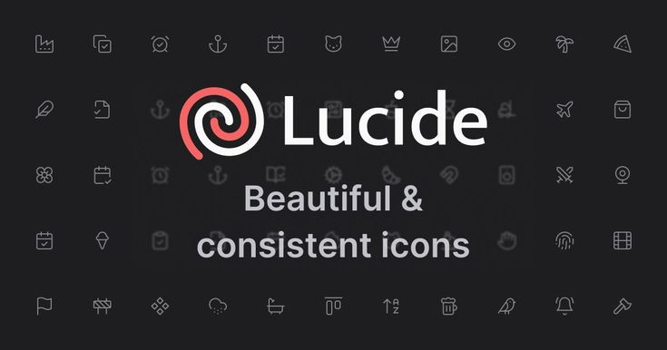

Icons
How working with lucide icons felt, rather than using customized icons
Working with lucide icons made my development more easier, rather than looking for a customized icon and styling it to my taste...with lucide icon i just had to link the website to my code and yoo the icons are available for use. You can try them out by visiting the link above